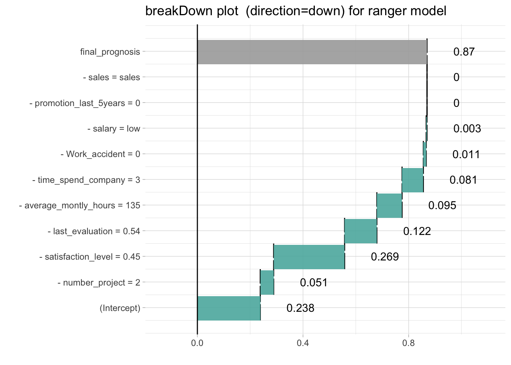
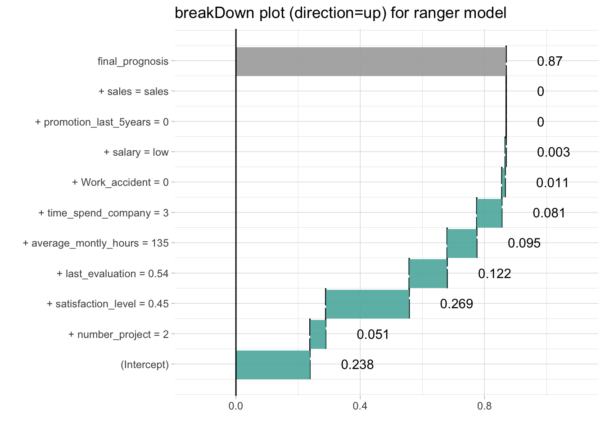

model agnostic breakDown plots for ranger
Przemyslaw Biecek
2018-09-13
break_ranger.RmdHere we will use the HR churn data (https://www.kaggle.com/) to present the breakDown package for ranger models.
The data is in the breakDown package
library(breakDown)
head(HR_data, 3)
#> satisfaction_level last_evaluation number_project average_montly_hours
#> 1 0.38 0.53 2 157
#> 2 0.80 0.86 5 262
#> 3 0.11 0.88 7 272
#> time_spend_company Work_accident left promotion_last_5years sales salary
#> 1 3 0 1 0 sales low
#> 2 6 0 1 0 sales medium
#> 3 4 0 1 0 sales mediumNow let’s create a ranger classification forest for churn, the left variable.
library(ranger)
HR_data$left <- factor(HR_data$left)
model <- ranger(left ~ ., data = HR_data, importance = 'impurity', probability=TRUE, min.node.size = 2000)
predict.function <- function(model, new_observation) predict(model, new_observation, type = "response")$predictions[,2]
predict.function(model, HR_data[11,])
#> 1
#> 0.8692012But how to understand which factors drive predictions for a single observation?
With the breakDown package!
Explanations for the trees votings.
library(ggplot2)
explain_1 <- broken(model, HR_data[11,-7], data = HR_data[,-7],
predict.function = predict.function,
direction = "down")
explain_1
#> contribution
#> (Intercept) 0.238
#> - satisfaction_level = 0.45 0.065
#> - number_project = 2 0.231
#> - last_evaluation = 0.54 0.129
#> - average_montly_hours = 135 0.099
#> - time_spend_company = 3 0.091
#> - Work_accident = 0 0.013
#> - salary = low 0.003
#> - sales = sales 0.000
#> - promotion_last_5years = 0 0.000
#> final_prognosis 0.869
#> baseline: 0
plot(explain_1) + ggtitle("breakDown plot (direction=down) for ranger model")
explain_2 <- broken(model, HR_data[11,-7], data = HR_data[,-7],
predict.function = predict.function,
direction = "up")
explain_2
#> contribution
#> (Intercept) 0.238
#> + satisfaction_level = 0.45 0.065
#> + number_project = 2 0.231
#> + last_evaluation = 0.54 0.129
#> + average_montly_hours = 135 0.099
#> + time_spend_company = 3 0.091
#> + Work_accident = 0 0.013
#> + salary = low 0.003
#> + sales = sales 0.000
#> + promotion_last_5years = 0 0.000
#> final_prognosis 0.869
#> baseline: 0
plot(explain_2) + ggtitle("breakDown plot (direction=up) for ranger model")